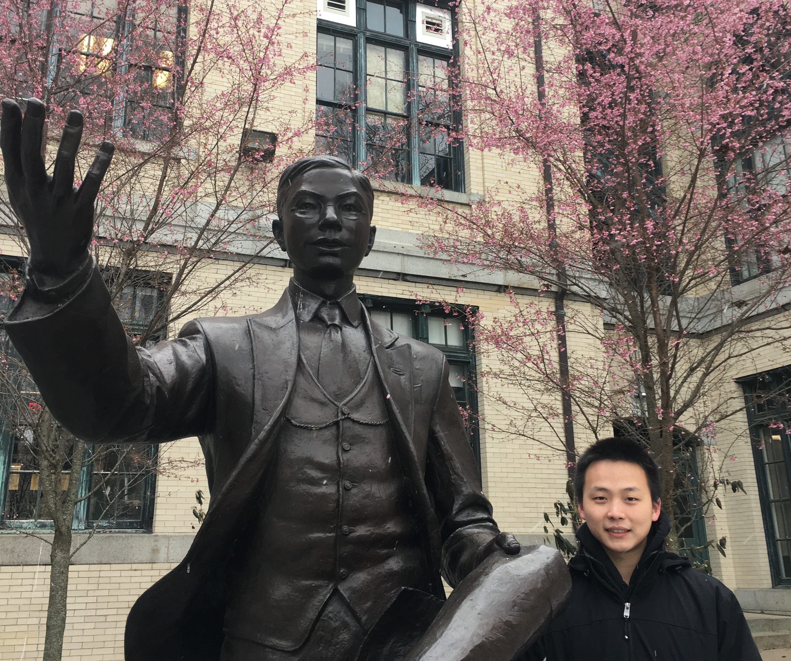
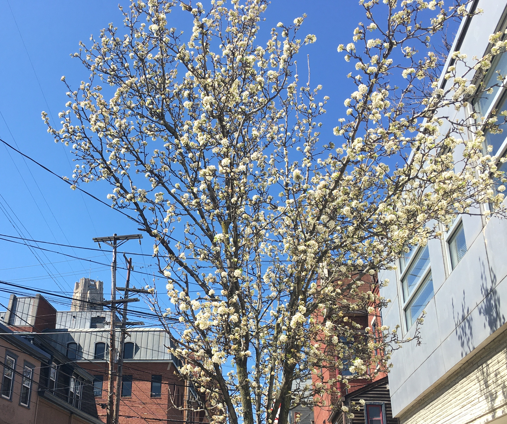

今天完成了740最后一个作业的批改，这一整个学年，应当全部落下帷幕了。高通的实习风险很大，要等待Export License通过我才能去实习，每天检查状态比较的折磨。如果不能去，那也只能说命是如此，Move on了，要去找找科研。这一年的折磨下来，心态倒是不错，寄便寄，不寄便不寄，我唯有做好我自己的那一部分。
所以这两天便是假期了。明天开始要学习现代C++和OpenCL，今天便琢磨着，把这一整年的经历，略略的记录一下，也好让以后对匹兹堡的事与人有个念想。这篇回忆录的结构可是费了老大的劲儿想，我不想按照时间顺序，那样比较流水账，于是大概思考了这一整年的行为和思想，分了几块儿来记录。但求自己和有心人以后读起来时，如手掌中的流沙一般，放过它，任它流走吧。
学校与学习
总体来说，我觉得我算是比较努力。整体上维持了每天从早到晚的学习生活。但是这样做并不意味着我比别人付出的多，我只是第一习惯于在公共场合比如INI或者图书馆学习(好让他人有个监督)，第二学习的时候往往很难非常专注，故此只能用堆时间来填补。到了如今，我早就明白自己是个什么人了，要说自己管住自己，万万不能，非得要外部驱动力，比如鞭策，或者压力才行。说到底，我对自己的要求太低了，对生活质量完全没要求，能吃饱能有地方睡就行，对于自己的生活，我是没有内部动力去奋斗的。支持我奋斗的都是外部动力，家庭期待，家国梦想，同辈竞争等等。当然在CMU确实更加找到了意义，坚定了想要学好计算机领域，特别是高性能计算的念头。或者这就是为什么，这一整年我能够坚持下来吧。
我很喜欢这个学校。我觉得它拥有非常强的系统课程，水准很高，起码并行计算这方面比当时本科的老师讲的要好。也是从513开始，我才算是真正开始入门计算机。想想以前的水平，实在是不敢恭维。这里的课业很重，但是往往正是因为这样，文凭才有竞争力。累一点苦一点，我没觉得怎么样，反而觉得应该如此。或许我的价值观是类似《钢铁是怎样炼成的》的，我很向往那种，下工厂埋头苦学，撸起袖子加油干的精神。嘿，我知道，老古董啦。没有遇见过任何一个年轻人，还能说出吃苦很好的这种话来，除了Michael哈哈哈哈。这样的想法对于成功不是必要的，同学们学的都很好，比我聪明百倍，很精明，价值观也很先进。我只是愿意这样做，喜欢这样的精神，属于个人的喜好吧。
我尤其喜欢我们的校园。校园很小，反而有一种温馨感。我们院孤悬海外，走到主校区要一会儿路。但是这条路途径一座古老的桥，桥下是火车轨道，跑的是比较古老的燃气机车。每次我从桥上走过，就觉得自己像是上世纪来自清国的官派留学生，拖着长辫子，抱着课本在蒸汽和汽笛声中匆匆而行。那种感觉非常奇怪，又厚重，又悲伤，又充满了希望。校园的大草坪只要阳光好，总是有很多晒太阳或者玩飞盘的同学，很有美国大学的风范。另一个有美国大学风范的是自助餐，9刀的自助餐我每次中午胡吃海塞，晚上不吃。我每次一边塞吃的一边想，吝啬鬼，外国人看到我那个扒饭的样子，会不会恍然生出错觉，今夕是何年，这是来自清国的留学生吗，哈哈哈哈哈。我倒是过了害羞觉得丢人的年纪，转而走向了另一个社牛的极端。校园里最美的地方在ECE楼前面一些些。那里有茅以升先生的雕塑，是国务院捐助的，雕塑的后面种着树。冬春交替之际，那几棵树最先开了粉色的花朵，屹立于风雪中。我想这是对我们自己的知识分子最温柔的尊重。那一幕场景时常鼓舞着我。尽管我并不在为国家做贡献，我只是在为自己找一份工作，试图学习最尖端系统的知识，我仍然觉得自己走在那座桥上的时候，步伐都坚定了一些。

匹兹堡
真的很喜欢匹兹堡。秋天的时候，匹兹堡枫叶(或者是别的某种红叶)团簇，远远望去像是古老的云，或者是婚礼上鲜艳的红裙。红叶并不是使人感到萧瑟，反而使人感到很沉静。那天我特意去学校看了红叶，走在校门口的那两颗树下，我觉得它们仿佛是有生命的。它们活着，却并不发出声音，只是注视着行人。恍然间，我觉得我跪坐在树下，飘零的红叶，冷冽的长刀，无眠的凄清日夜和不知归途的前路。只觉得心很沉静，能感觉到自己的呼吸。
冬天。我最喜欢冬天了。是谁问过我这个问题呢，我大概是觉得冬天很温暖，尤其是瑟瑟地缩在自己的大衣里，或者窝在室内的沙发上的时候。因为外部的酷烈环境，人和自己身边的东西，衣服，床等等，愈发的亲近。这种亲近感带来的温暖，大概是我喜欢冬天的原因，也是我希望得到的人生奖品。一月的某一天早晨我打开门，白雪覆盖了天地。烦扰的心事如同尘土一样被雪覆盖，脚踩在上面吱嘎吱嘎的响，带着无法言明的欣喜。我后来很常想起这个瞬间，觉得心境都好了很多。四月份的时候，我想发一条朋友圈记录一下匹兹堡的一年，本来想写这件事情的，但是思来想去，还是删掉了，大概觉得不好意思，太敏感而多情了。我看，不如我去演林黛玉好了，换个女生演贾宝玉，红楼梦导演的思路还是不够多元，笑死。
春天，时时刻刻都充满了感动。我们院楼下的路，满树满树的开白色的花。我看着它们从光秃秃，到生出蓓蕾，到花开，到叶生，充满了生的喜悦。没有冬天，就不会有春天。这听起来是一句废话，但是实质呢，那也是一句废话。不过我要表达的确实是一个比较浅显的道理，我在新加坡，从来没有为了花开而欣喜，因为处处开花，就失去了那种对其本身存在的感知和感激。在匹兹堡的冷风里吹了几个月，见到树上开花的那种震撼，真是觉得自己怎么样都死不了了，讨饭、啃树皮、睡狗洞我也要活下去，活下去是对生命最美丽的诠释。怪是怪了一点，但那确实是我站在花树下感受到的事情。 
有冬方知春，四季轮替，方知岁岁年年。我在匹兹堡的日子大致心情非常稳定，相对沉静，也许是受到了这里动人的季节变化的影响吧。写这篇回忆录的时候，外面下着凄冷的雨，5月冷雨，颇似江南。我隔着玻璃看着外面的雨，听着罗大佑的海上花，孤孤单单，却似恰如其分，融入天地。
同学们
很大胆的标题，不是吗。我们院的同学们都很可爱，在一起学习努力很有同舟共济之感。有人的地方就有江湖，我猜大概大家私底下有不同的价值观，不同的处置方式，不同的人生目标和方向，但是起码在我能听说的范围内，大致很和谐，我觉得很难得了。我这种老古董的价值观，当然会和许多人产生不同的意见分歧，但是在我所能及的范围内，我都把它们消化掉了。中间对一个同学产生过意见，必须说很大一部分是出于自身对他的嫉妒吧，他很聪明，也很主动，多半因为嫉妒他，才看不惯他的行为，觉得太装了。现在想想，是有些没必要了。除此之外，我自己的意见，应该都消化掉没有表现出来。价值观不一样实在正常，每每发生这样的事情，我都觉得自己实在太小家子气，比较小心眼。然后我就会想，李世民会怎么做呢? 不要笑，我真的是这样想的。我很崇拜李世民，我觉得他是十分理性的人，在皇帝的位置上，仍然能从对目标是否有益处的角度用人，开创了贞观之治。于是我便会想，不同的看法或者行为，对于共同努力学习找工的这个目标有没有损害呢。只要没有，又有什么大不了的呢? 李世民能和尉迟敬德弓槊配合，我又有什么过不去的? 于是就这样平复了自己，第二天睡了一觉就什么都没问题啦。男子汉大丈夫没有隔夜仇，现在连之前有意见的同学，都觉得不错了，当然有我不想学习的部分，却也有我不及，值得我学习的地方。未来的自己和读者可千万别觉着太假，也别觉得太玄，这确实是一个能够实现的调整方法。
虽然话说的这样好听，但是这篇回忆录若是写在去年十二月，多半用词是大不相同的，那时候很多同学课一起上，题一起做，还是比现在要亲近一些。事物随着时间变化变化，原也正常，没有人应该被谁束缚住。对于大家的恩惠，小到一瓶旺仔、一杯优乐美、一个包子，我都铭记在心。我大概便是这样一个，比较小家子气小心眼，比较敏感，但又会调整自己的人。这样的人做着武侠的梦，原是不应该的，不如令狐冲潇洒豁达，不如杨过情深，更不如郭靖重义。但是我偏偏憧憬那样的人，也愿意带上那样的面具，执剑江湖，随风飘飘，天地任逍遥。至于别人对我怎么看，如何评价，我倒越来越不在乎了。前些天听到一个同学说我比较阴柔，放在以前，必然是不开心的，而且要尝试让自己的声音变得低沉一点。现在却完全不会觉得有什么。到了如今早就明白自己确实比旁的男生要女气一点，哪个正经男生会喜欢唱京戏呢; 但是也大概摸索到了男儿应有的忍耐、勇气和方向。不会太坏也不会太好，半分明白半分糊涂，足够继续走下去了。
啊我必须在这里单独记录一下崽崽。对这个小臭狗，我本来是没有任何感情的，也没有很着急要去看它。但是嘉年华那天第一次见面，还是发觉自己很喜欢它。那天下午我坐在桌子底下，小臭狗玩累了在旁边睡觉，阳光照在身上，只觉得岁月静好。我也很喜欢抱着它唱歌，那天我给它唱了好久的偏偏喜欢你，它当然听不懂，我也不是在唱偏偏喜欢狗，这主要是满足我自己对于某种场景的渴望吧。我很喜欢小臭狗，可我仔细的思考了一下，还是理性的觉得我无法去养狗或者养猫，害怕麻烦，也害怕注定的分离。这一点我很佩服大迁徙，虽然听说她被臭狗搞得很崩溃，但是我仍然觉得她能坚持下来，是非常坚韧的。
个人情感
好嘛，更大胆的标题，不是吗。诚实地说，确实对两个女生产生过一些好感，但是都没有靠近。我自己对自己说，现在不是谈恋爱的时候，有更重大的目标要全身心的投入。真的就这样，在记录里不断的重复告诉自己: 大概半分真半分假，没必要说感情就是生活的皮，也没必要见到一个女生就掏心掏肺。就这样过了一会儿，也就忘却了。几年前，我是很没有方向感的人，个人情感占了大脑运算的大部分内存，变成了现在这样，也不知是好是坏了。同学们问起来，我也都如实的说了，属于是已经不要脸无所谓了，希望没有被那两个姑娘知道，亦或是给她们造成什么麻烦。正如文章一开头所说的，如手中的流沙，放它过了吧。
嘿，之前自己不让自己喜欢别人，现在在这里记录个人感情，看来还是作业不够多啊。许多年以前，我在源氏物语的主题曲下面评论说，每个人的心中都有一个藤壶更衣一样的人，那么遥不可及，但是当你偷偷看她时，觉得全世界洒满了白色的、暖暖的阳光，听见远处屋檐上风铃叮叮当当地响着。那时候我心里喜欢我们的历史与社会老师，她很严厉，但是我觉得她对我很好很好，很好很好; 她有的时候非常调皮，会觉得和她很亲近。以前我总是觉得自己有恋母或者恋姐情节，并且大概在以此为荣。很久以前我还在微博上写心情记录的时候，就说自己发烧的时候幻想扎着马尾，穿着白色T恤和牛仔裤的女子坐于床前，拿手背碰我的额头。嘿，以前很渴望某种，被照顾的被包容的亲近感觉。现在看起来，真的是没有长大的孩子啊。那样的描绘如今对我仍然有吸引力，仍然如睡梦成真，但我已经明白是幻非真，对自己这种依赖的情绪很是警惕。
我很对不住之前谈的女朋友，她是那样善良而温柔的人，但是我总是很自卑，很没有担当，也不够体贴。我印象很深刻的大概是她问我某个辩题，我可能讲了一大通自己的感受，把自己讲感动了，也不管她受的了受不了。还有一起去旅游的时候，太多的地方没有照顾到她的心情。我很难相信我做出过那样的事情。我总是说自己是一个很敏感的人，我确实能感觉的她的情绪，可是却没有想着法儿哄她高兴，或者说尝试的根本就不够努力。我看上去像是很温和的人，可是实际上那一段时间却如此的有棱角。她和她母亲吵架，我总是觉得她母亲是对的，当然价值观上我是老古董是有这种感觉，但是真是万万不应该这样讲出来。空有一副温和的外表，却缺乏真正包容恋人的自信和心态，缺乏体贴爱人的觉悟。事到如今，我反反复复的反思才想明白，总是觉得深深的悔恨。不悔恨恋情结束，她应该值得比我好千百倍的人，只是悔恨少不更事，辜负她的期望，也许给她带来了伤害，真真不知道怎么去弥补才好。我很想写一封信，写下我的愧疚，说一声对不起，可是我害怕这封信本身又是不体贴的，打扰她的，或者是带来新的伤害的。思量再三，我想要不还是写，万一她在等待一声对不起，这次可不要让她等久了。后悔确实是人最深刻的情绪，折磨人的时间最长，也最难以释怀。
其实一年前甚至几周前，我还是没想明白的。早先我后悔的是当初分手时说了那么重的话，很对不起她，却没有想通谈恋爱的过程中我的做法错在何处。年岁渐长，观察了很多谈得很好的情侣做参照，才猛然意识到自己的女朋友自己不疼是多么的不应该。几周前韩国舞蹈社表演，我和一个同学去蹭热闹，去的比较晚后排都站满了人。她一直往前钻到舞台前，站在VIP座位旁边。我一开始是有点不好意思的，如果我自己肯定不好意思这么干，但我还是跟着她，唯恐她一转头找不到我。那一瞬间周围人头攒动，我心里却像明镜高悬，好像想明白了很多东西。
实在不该在这里记录这些事情的。原先的想法是只post一些不那么私人的事情，不要重蹈之前在微博记录的覆辙。但是还是没有忍住写了这些关于同学们和个人情感的感受。可能人无法抗拒某种分享欲，自己对自己和脑海中的另一个幻象说话，也许仍然太苦闷了一些。写到此处，只觉心中豁然开朗，如红色的太阳从蓝色的太平洋上升起。想起很老很老的一首歌，叫做渴望。我很喜欢最后一段，抄录于此，作为这两个有些出格的sections的结尾吧。
恩怨忘却，留下真情从头说。
相伴，人间，万家灯火。
故事不多，宛如平常一段歌。
过去，未来，共斟酌。
过去，未来，共斟酌。
结语
好了，好了好了(恼)。军人要有骨气，不要婆婆妈妈地说太多。正如分布式系统里学习的，logs的频率是一个tradeoff，如果太高就会影响processing的速度，如果太低就会影响recovery的速度。我看我还是在这里收尾，取得一个不错的平衡。要去忙高通的事情啦，去面对现实世界的血腥和质朴。男: 亲爱的任昊同学、观众朋友们，我们下期再见。女: 再见。同: (收稿子)。